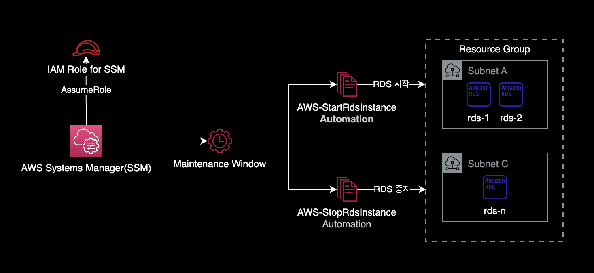
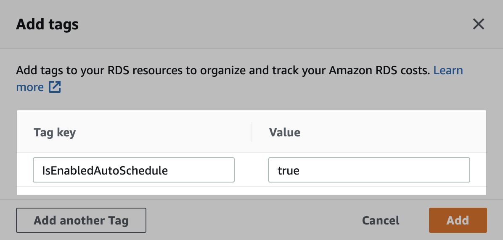

maintenance window로 RDS 가동시간 자동화
개요
AWS SSM의 Maintenance Window 기능을 사용해서 RDS를 평일 업무시간에만 가동하도록 설정하는 방법을 소개합니다.
SSM Maintenance Window 구성 후 전체 아키텍처는 다음과 같습니다.

배경지식
Maintenance Window 장점
Lambda Function 기반의 Instance Scheduler on AWS과 비교하여 SSM Maintenance Window를 사용했을 때 장점은 다음과 같습니다.
- Maintenance Window가 Instance Scheduler 보다 쉽게 구현 가능합니다.
- Lambda Function과 같은 별도의 리소스 관리를 할 필요가 없습니다.
- 자동화 스케줄 관리, 결과 조회, 설정 변경 등 운영 난이도도 쉽습니다.
준비사항
AWS CLI
작업자의 로컬 환경에 AWS CLI가 설치되어 있어야 합니다.
$ aws --version
aws-cli/2.11.0 Python/3.11.2 Darwin/22.3.0 source/arm64 prompt/off
충분한 IAM 권한
작업자는 AWS SSM에 대한 충분한 IAM 권한을 보유하고 있어야 합니다.
환경
로컬 환경
- OS : macOS Ventura 13.2.1
- Shell : zsh + oh-my-zsh
- AWS CLI : 2.11.0
- IAM 권한 : AdministratorAccess
RDS 중지 및 시작 자동화 설정
IAM Role
이 시나리오에서는 dev-global-ssm-instance-autoscheduler-iam-role이라는 이름의 IAM Role을 사용합니다.
IAM Policy
AWS Systems Manager가 EC2, RDS를 가동중지, 시작하기 위한 서비스용 IAM Policy를 부여합니다.
{
"Statement": [
{
"Action": [
"ec2:StopInstances",
"ec2:StartInstances",
"ec2:DescribeInstanceStatus"
],
"Effect": "Allow",
"Resource": "*",
"Sid": "AllowSSMStopAndStartEc2Instances"
},
{
"Action": [
"rds:StopDBInstance",
"rds:StopDBCluster",
"rds:StartDBInstance",
"rds:StartDBCluster",
"rds:DescribeDBInstances"
],
"Effect": "Allow",
"Resource": "*",
"Sid": "AllowSSMStopAndStartRdsInstances"
},
{
"Effect": "Allow",
"Action": [
"ssm:SendCommand",
"ssm:CancelCommand",
"ssm:ListCommands",
"ssm:ListCommandInvocations",
"ssm:GetCommandInvocation",
"ssm:GetAutomationExecution",
"ssm:StartAutomationExecution",
"ssm:ListTagsForResource",
"ssm:GetParameters"
],
"Resource": "*"
},
{
"Effect": "Allow",
"Action": [
"states:DescribeExecution",
"states:StartExecution"
],
"Resource": [
"arn:aws:states:*:*:execution:*:*",
"arn:aws:states:*:*:stateMachine:*"
]
},
{
"Effect": "Allow",
"Action": [
"lambda:InvokeFunction"
],
"Resource": [
"arn:aws:lambda:*:*:function:*"
]
},
{
"Effect": "Allow",
"Action": [
"resource-groups:ListGroups",
"resource-groups:ListGroupResources"
],
"Resource": [
"*"
]
},
{
"Effect": "Allow",
"Action": [
"tag:GetResources"
],
"Resource": [
"*"
]
},
{
"Effect": "Allow",
"Action": "iam:PassRole",
"Resource": "*",
"Condition": {
"StringEquals": {
"iam:PassedToService": [
"ssm.amazonaws.com"
]
}
}
}
],
"Version": "2012-10-17"
}
위 IAM Statement는 AWS 공식문서 Use the console to configure permissions for maintenance windows를 참고해서 작성했습니다.
Trust Relationship
IAM Role의 Trust Relationship은 다음과 같이 설정되어 있습니다.
{
"Version": "2012-10-17",
"Statement": [
{
"Sid": "",
"Effect": "Allow",
"Principal": {
"Service": "ssm.amazonaws.com"
},
"Action": "sts:AssumeRole"
}
]
}
AWS Systems Manager에서만 해당 IAM Role을 사용할 수 있도록 제한합니다.
Resource Groups
Resource Group 생성
리소스 그룹을 생성합니다.
$ aws resource-groups create-group \
--name dev-rds-resource-group \
--resource-query '{"Type":"TAG_FILTERS_1_0","Query":"{\"ResourceTypeFilters\":[\"AWS::RDS::DBInstance\"],\"TagFilters\":[{\"Key\":\"IsEnabledAutoSchedule\",\"Values\":[\"true\"]}]}"}'
대상 RDS에 태그 달기
리소스 그룹에 등록하려고 하는 RDS 인스턴스에 아래와 같이 태그를 추가합니다.

- Key :
IsEnabledAutoSchedule - Value :
true
위 태그 Key, Value는 반드시 저처럼 사용할 필요는 없으며 리소스 그룹 생성시 지정된 태그만 맞춰서 넣으면 됩니다.
리소스 그룹에 RDS가 제대로 인식되었는지 확인합니다.
$ aws resource-groups list-group-resources \
--group dev-rds-resource-group \
--query 'ResourceIdentifiers[]' \
--output table
-----------------------------------------------------------------------------------------------------------
| ListGroupResources |
+---------------------------------------------------------------------------------+-----------------------+
| ResourceArn | ResourceType |
+---------------------------------------------------------------------------------+-----------------------+
| arn:aws:rds:ap-northeast-2:111122223333:db:finops-target-rds-1 | AWS::RDS::DBInstance |
| arn:aws:rds:ap-northeast-2:111122223333:db:finops-target-rds-2 | AWS::RDS::DBInstance |
+---------------------------------------------------------------------------------+-----------------------+
2대의 RDS에 IsEnabledAutoSchedule = true 태그를 추가한 후 정상적으로 리소스 그룹이 인식합니다.
이처럼 AWS의 Resource Groups 서비스를 사용하면 태그 기반으로 여러 대의 EC2, RDS 인스턴스를 묶어서 그룹핑할 수 있습니다.
System Manager
Maintenance Window 생성
Cron Cheatsheet
AWS SSM Maintenance Window에서 사용하는 Cron 표현식은 다음과 같습니다.
cron(* * * * * *)
– – – – – -
| | | | | |
| | | | | +—– year
| | | | +—– day of week (SUN - SAT or 1 – 7)
| | | +——- month (1 – 12)
| | +——— day of month (1 – 31)
| +———– hour (0 – 23)
+————- min (0 – 59)
더 자세한 사항은 AWS 공식문서 Reference: Cron and rate expressions for Systems Manager를 참고하세요.
RDS 자동시작을 위한 Maintenance Window 생성
$ aws ssm create-maintenance-window \
--name "dev-rds-auto-start-mw" \
--description "Auto start RDS instances" \
--schedule "cron(0 8 ? * MON-FRI *)" \
--schedule-timezone "Asia/Seoul" \
--duration 1 \
--cutoff 0 \
--allow-unassociated-targets \
--tags "Key=ManagedBy,Value=Console"
cron(0 8 ? * MON-FRI *): 평일 오전 8시에 실행--schedule-timezone "Asia/Seoul":cron()표현식에 입력된 시간을 한국시간으로 적용
RDS 자동중지를 위한 Maintenance Window 생성
$ aws ssm create-maintenance-window \
--name "dev-rds-auto-stop-mw" \
--description "Auto stop RDS instances" \
--schedule "cron(0 19 ? * MON-FRI *)" \
--schedule-timezone "Asia/Seoul" \
--duration 1 \
--cutoff 0 \
--allow-unassociated-targets \
--tags "Key=ManagedBy,Value=Console"
cron(0 19 ? * MON-FRI *): 평일 오후 7시에 실행--schedule-timezone "Asia/Seoul":cron()표현식에 입력된 시간을 한국시간으로 적용
$ aws ssm describe-maintenance-windows \
--query 'WindowIdentities[]' \
--output table
-------------------------------------------------------------------------------------------------------------------------------------------------------------------------------------------------------------
| DescribeMaintenanceWindows |
+--------+---------------------------+-----------+----------+-------------------------------------------+-------------------------+---------------------------+--------------------+------------------------+
| Cutoff | Description | Duration | Enabled | Name | NextExecutionTime | Schedule | ScheduleTimezone | WindowId |
+--------+---------------------------+-----------+----------+-------------------------------------------+-------------------------+---------------------------+--------------------+------------------------+
| 0 | Auto start RDS instances | 1 | True | dev-rds-auto-start-mw | 2023-03-09T08:00+09:00 | cron(0 8 ? * MON-FRI *) | Asia/Seoul | mw-01a2345a67e890123 |
| 0 | Auto stop RDS instances | 1 | True | dev-rds-auto-stop-mw | 2023-03-08T19:00+09:00 | cron(0 19 ? * MON-FRI *) | Asia/Seoul | mw-0c12345c6789012f4 |
+--------+---------------------------+-----------+----------+-------------------------------------------+-------------------------+---------------------------+--------------------+------------------------+
Maintenance Window의 타겟 등록
RDS 자동시작을 위한 Maintenance Window에 타겟을 등록합니다.
중요
--window-id값은 자신의 환경에 맞게 값을 변경한 후 명령어를 실행합니다.
$ aws ssm register-target-with-maintenance-window \
--window-id "mw-01a2345a67e890123" \
--name "dev-rds-instances" \
--resource-type RESOURCE_GROUP \
--targets Key=resource-groups:Name,Values=dev-rds-resource-group
RDS 자동중지을 위한 Maintenance Window에 타겟을 등록합니다.
중요
--window-id값은 자신의 환경에 맞게 값을 변경한 후 명령어를 실행합니다.
$ aws ssm register-target-with-maintenance-window \
--window-id "mw-0c12345c6789012f4" \
--name "dev-rds-instances" \
--resource-type RESOURCE_GROUP \
--targets Key=resource-groups:Name,Values=dev-rds-resource-group
Maintenance Window의 Task 생성
RDS 자동시작을 위한 Maintenance Window에 작업Task를 등록합니다.
아래 값들은 자신의 환경에 맞게 변경하여 실행합니다.
--targets옵션의Values값은 AWS 콘솔에서 확인 후 변경하여 명령어를 실행합니다.--window-id값
$ aws ssm register-task-with-maintenance-window \
--window-id "mw-01a2345a67e890123" \
--task-arn "AWS-StartRdsInstance" \
--service-role-arn arn:aws:iam::111122223333:role/dev-global-ssm-instance-autoscheduler-iam-role \
--targets Key=WindowTargetIds,Values=fc6b21a2-7d65-48da-83f6-c88a34715c06 \
--task-type AUTOMATION \
--task-invocation-parameters "Automation={DocumentVersion=1,Parameters={InstanceId='{{RESOURCE_ID}}'}}" \
--priority 0 \
--max-concurrency 1 \
--max-errors 1 \
--name "rds-autostart" \
--description "Automation task to start RDS instances"
RDS 자동중지를 위한 Maintenance Window에 작업Task를 등록합니다.
아래 값들은 자신의 환경에 맞게 변경하여 실행합니다.
--targets옵션의Values값은 AWS 콘솔에서 확인 후 변경하여 명령어를 실행합니다.--window-id값
$ aws ssm register-task-with-maintenance-window \
--window-id "mw-0c12345c6789012f4" \
--task-arn "AWS-StopRdsInstance" \
--service-role-arn arn:aws:iam::111122223333:role/dev-global-ssm-instance-autoscheduler-iam-role \
--targets Key=WindowTargetIds,Values=89e2319e-6e44-4076-a6d5-4eac16735b89 \
--task-type AUTOMATION \
--task-invocation-parameters "Automation={DocumentVersion=1,Parameters={InstanceId='{{RESOURCE_ID}}'}}" \
--priority 0 \
--max-concurrency 1 \
--max-errors 1 \
--name "rds-autostop" \
--description "Automation task to stop RDS instances"
실행 결과 확인
설정한 스케줄 실행 시간이 지나기를 기다린 다음, Maintenance Window 실행 결과를 확인합니다.
$ aws ssm describe-maintenance-window-executions \
--window-id "mw-0c12345c6789012f4" \
--query "WindowExecutions[]" \
--output table
-------------------------------------------------------------------------------------------------------------------------------------------------------------------------------------------------------
| DescribeMaintenanceWindowExecutions |
+----------------------------------+-----------------------------------+----------+--------------------------------------------------+---------------------------------------+------------------------+
| EndTime | StartTime | Status | StatusDetails | WindowExecutionId | WindowId |
+----------------------------------+-----------------------------------+----------+--------------------------------------------------+---------------------------------------+------------------------+
| 2023-03-08T21:20:28.671000+09:00| 2023-03-08T21:00:29.269000+09:00 | SUCCESS | | 9677768a-7688-413d-8222-4f3fb8e2aca1 | mw-0c12345c6789012f4 |
| 2023-03-08T20:41:15.476000+09:00| 2023-03-08T20:41:11.546000+09:00 | FAILED | One or more tasks in the orchestration failed. | 87d86058-82a7-4fd4-a5ad-c17cd1dde5d8 | mw-0c12345c6789012f4 |
+----------------------------------+-----------------------------------+----------+--------------------------------------------------+---------------------------------------+------------------------+
이것으로 RDS 자동시작, 중지 설정 작업은 완료됩니다.
참고자료
RDS 가동시간 스케줄링 자동화
위 글의 경우 SSM State Manager를 사용해서 스케줄링 자동화를 구현하는 방법입니다.